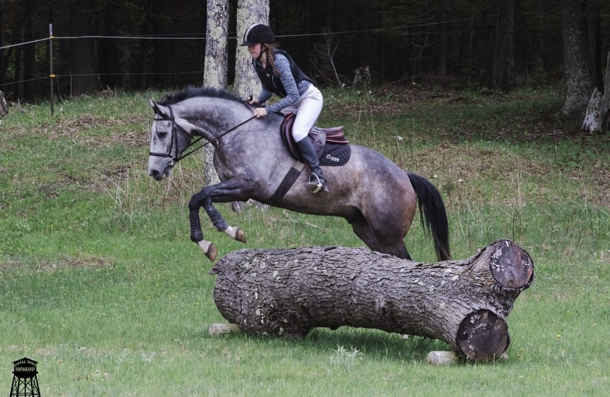
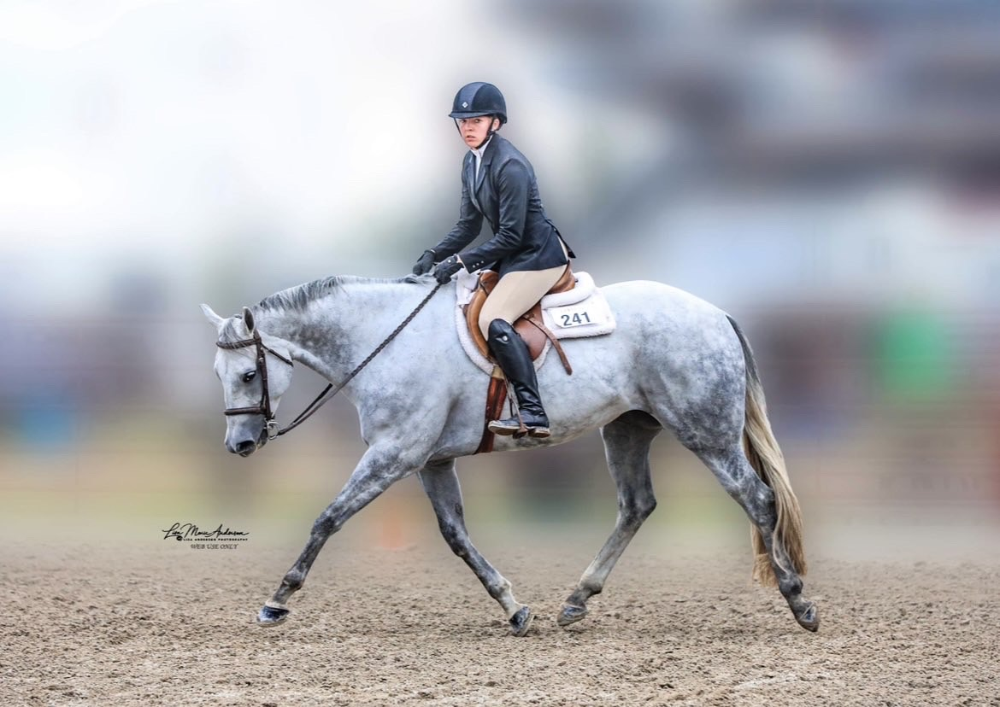
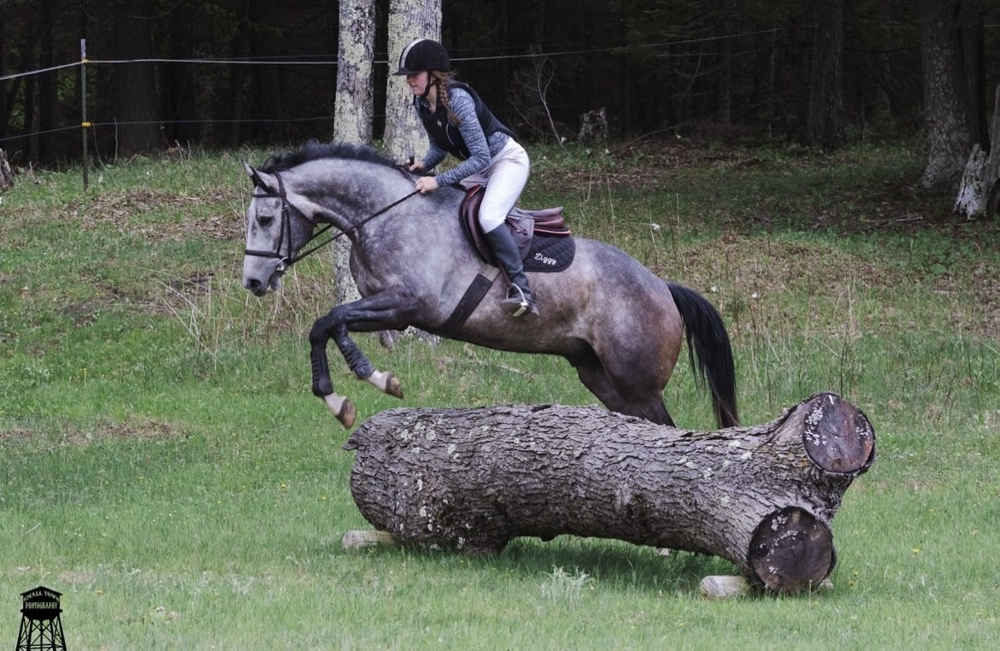
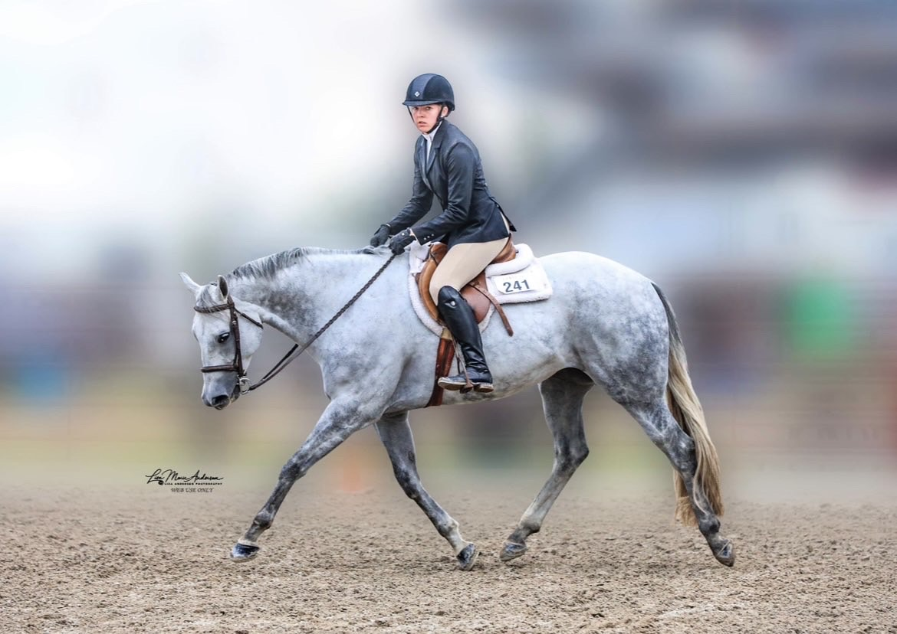

Reese is a youth rider who focuses on over fence events. She has shown numerous times at every major stock horse show in the country and has placed in the top 3, 5, and 10 numerous times.
"This was a super cool resource! Not only was I able to test it on certain questions I already knew the answer to, it also knew more than I did! I'm excited to use this for future shows and I think this will be very helpful to a lot of people."
 


